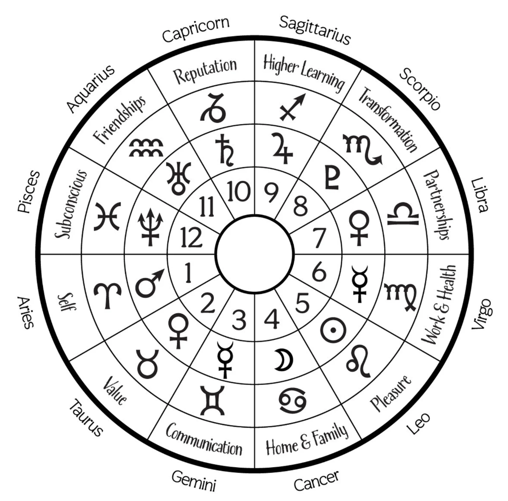

The 12 astrological houses sit the form of a wheel. The zodiac wheel is based on the sun’s yearly rotation around the earth, and the houses are based on the earth’s 24-hour rotation on its axis. Sounds a little confusing, right? It can get a little tricky, so it’s easiest to think about astrology’s 12 houses as parts of a clock. Each of the 12 equally divided segments represent an area of life. The 1st house, for example, focuses on the self, and following houses continue to expand outward (moving counterclockwise on the wheel) to topics like family, love and career.

The first house is known as the rising sign or ascendant and is considered to be the anchor of the astrological chart. It is the furthest left point of the essential horizon line and reveals which zodiac sign was rising from the eastern horizon at your time of birth.
This sign is all about how perceive you. Let's say you are Gemini with a Scorpio rising, that means while you have the bubbly and chatty makings of a Gemini, you appear to be someone who's very focused to others. This would differ from a Gemini sun with a Pisces who may be perceived to be dreamier and more creative.
The ascendant shows how you come across to others and how you define yourself. It also reveals the ruling planet of your birth chart. For example, if you have a Virgo rising, your ruling planet would be Mercury which makes you an overall analytical person. If you have a Cancer rising, your ruling planet would be the Moon, heightening your emotions.
The first house is associated with the sign Aries and planet Mars.
The second house represents one’s finances, the material realm, confidence and possessions. This house focuses on personal resources and self-esteem. It shows how, where, and why you find security in the things you do.
Your second house can help you find ways to earn money and help you pinpoint the things that are worthy of your time and energy. Many astrologers also connect this house with childhood friends because they are the basis of camaraderie for the future.
The second house is associated with the sign Taurus and planet Venus.
The third house allows us to have insightful and meaningful communication with others. This house aids in how we express ourselves and receive information or news. It also allows us to bond and connect with siblings on a deeper level.
Not only that, but it also describes our relationship with these individuals. Beyond that, the third house dictates your ties with the local community and early schooling — particularly the impact they both have on you.
This house is associated with the sign Gemini and the planet Mercury.
The fourth house is a sensitive point in the birth chart because it is the most intimate house, therefore, it is highly significant in how one feels about themselves and the world around them.
The fourth house gives us an indication of our personal foundation. This includes family, heritage, tradition and home. Astrologers look to the fourth house to decipher how a person relates to the parental influences in their lives, nostalgia and sentimentality.
The fourth house is associated with the sign Cancer and the Moon.
If you are looking to take a chance and invest in an endeavor, speculative sport or connect with your gifts, then look to the fifth house.
This sector of the birth chart represents many different things, ranging from your inner talents to the types of entertainment you're into. It speaks to our creative side and informs where and how we find pleasure in our lives.
This house is associated with the sign Leo and the Sun.
The sixth house depicts our daily routine and the rituals that we choose to practice every day and can tell us the health issues or concerns that may be chronic, ongoing, or occur in our lifetime. It can also allow us to see how we can overcome those obstacles and get healthy by finding an activity that works best for us.
The sixth house also helps us describe the relationship we have with our coworkers, employees and people who occupy our workspaces.
The sixth house is associated with the sign Virgo and the planet Mercury.
The seventh house concentrates on interpersonal relationships, friendships, marriage, commitments and partnerships. It also focuses on contracts and agreements that we sign with others.
The juxtaposing energy of this sector allows us to see who our open enemies are — (those who we are in public strife with and know we aren't fond of) — and how we relate to these people. But, we can also learn here how to make up and reconnect with those individuals.
This house is associated with the sign Libra and the planet Venus.
The eighth house is about personal evolution, reproduction, taxes, and transformation. It is the "Rock & Roll" house of the birth chart because it relates to the edgier sentiments that are rarely shown to others.
Astrologers often look here to see how one can pay off debt or taxes as well as how we overcome obstacles. Intuition, obsession, possession and emotions can run deep through this house.
This house is associated with the sign Scorpio and the planets Mars and Pluto.
The ninth house in the birth chart allows you to embrace your personal philosophical beliefs by being mindful of the world around you and also gives you a chance to get out of your comfort zone by traveling to foreign places, tasting exotic flavors and embracing your spirituality.
It evolves around higher education, like college, graduate school, medical school and beyond, while urging us to ignite our intelligence and understand our moral code.
This house is associated with the sign Sagittarius and the planet Jupiter.
The tenth house represents our social standing and what we put out there for others to see or judge. Our public image and our career are found here. What the tenth house shows us depends on what we want to do for a living. It showcases our professional calling and aspirations.
This house is associated with the sign Capricorn and the planet Saturn.
The eleventh house gives you the chance to align with like-minded groups of people, community, social causes and to define your hopes, aspirations and goals for the future. This house is where you can see how society has grown, progressed and brought innovation.
The eleventh house is associated with the sign Aquarius and the planets Saturn and Uranus.
The twelfth house focuses on matters we deal with behind the scenes and the secrets we never share. Our dreams and subconscious rule this area of the birth chart, giving us insight into how we handle our mental health, punishment and frenemies.
This house is associated with the sign Pisces and the planets Jupiter and Neptune.